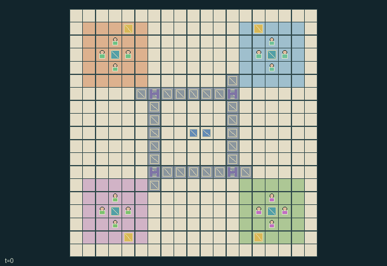

GI219 · Festival Kitchens

Original recording scope: Role 0 full actual recording, including original waits · Mode: Actual diagnostic replay
Additional generated state replay (different trajectory / full-state debug)

Keep four kitchens serving their own changing festival orders by transporting food through distinct equipment stages, protecting heat, fueling the shared boiler and returning reusable trays through hands or a finite routed conveyor.
Identity and original contract
16 independently actionable roles; 22 discrete commands per role; 909 native observation columns per role; original horizon 384 steps. Declared per-step reward range: -5 to 40. Observation regime: partially_observable.
Source SHA-256: 34219f5e5df7753805e75886060e43fd56c8e5545eca0454601419a568d544cb
The objective, rewards, population, map and horizon remain original. A preview is not a success claim.
Objective and gameplay
Keep four kitchens serving their own changing festival orders by transporting food through distinct equipment stages, protecting heat, fueling the shared boiler and returning reusable trays through hands or a finite routed conveyor.
A dish requires different equipment in four locations. Route switches and occupancy change another kitchen's item delay and freshness. Plating removes a shared clean tray until a served or expired dish's dirty tray is washed and returned. Physical reports reveal another kitchen's order for a limited time; insulated porter tools alter hot-food transport timing and can be exchanged.
- Four kitchens have different useful equipment: chop at 0, steam at 1, garnish at 2, plate at 3. Staff tool exchanges can change duties.
- Carry one item. Stage codes progress raw, chopped, steamed, garnished, plated; only a matching warm plated order earns completion reward.
- Hot dishes have 64 warmth at steaming or reheating. They cool every tick; an insulated porter grip halves carried cooling. Conveyors provide no insulation.
- Twenty-four belt cells form a clockwise ring. Four junction switches divert into one-cell holding spurs or release them back into the ring.
- Belts move only into cells empty at the start of their movement phase. A held item can block others; cell direction and warmth are native attributes.
- Steam and reheat consume boiler fuel. Washers use one shared water to turn dirty trays clean; clean trays must return to the plating rack.
- Only your kitchen's live order is visible. Adjacent staff can tell their home order; reports have a finite lifetime and may become stale.
- Service creates a dirty tray. Discarding or expiring plated food also preserves its dirty tray. Raw ingredients and utility stocks renew at explicit finite rates.
- Choose hands or belt routing, direct preparation or heat-restoring detours, and immediate rush orders or support for other kitchens. H=384 truncates the continuing festival.
Ending: No natural success or joint-failure terminal. This is a continuing finite world. H=384 truncates the observation window, not a success event; done inputs are absorbing.
What this game explores
Resource commons & externalities: An action changes a persistent resource or burden that another role also encounters. Compare extraction with maintenance and record the downstream resource trajectory.
Complementary production & service: A useful outcome requires ordered stages, scarce equipment or another role's capability. Measure real completed products and resource circulation rather than counting intermediate actions as success.
Joint transport & shared access: Positions, load geometry, occupancy and persistent access constrain whose action can succeed next. Distinguish physical handoff, shared controls and simultaneous force from a cosmetic cooperation label.
These are questions supported by rule structure, not observed learning effects.
Play it: operating walkthrough
crucibles play --game gi219Keep Python running and open its printed address. Select this game, set a seed and press Create session. The game itself is always English.
Assign a role range to Host with Assign / take over, or Assign all roles. Invite a second participant with Create player invitation, then assign a disjoint subset. Every original role is available.
For every owned role choose a legal command and press Queue. Arrow keys / WASD queue a declared directional action for the current role camera when available. Space or Advance one joint step advances everyone together. Non-directional games use the selectors.
Unqueued roles use the labelled untrained uniform-legal policy. Take over or release roles before the next step without resetting. Full-state debug is privileged and permanently logged; role cameras preserve permissions. Close the session to retain logs. Server restart does not restore sessions.
Complete command reference
IDs and English labels exactly match the manifest. Availability depends on role, resources, location and phase. An available action can still have no productive effect.
0·Wait; recover two energy
1·Move north
2·Move east
3·Move south
4·Move west
5·Take local pantry's raw flavour into empty hands
6·Process carried food at its next equipment station, chef tool
7·Place carried item onto nearest empty adjacent conveyor cell
8·Pick item from nearest occupied adjacent conveyor cell
9·Hand carried item to lowest-ID adjacent empty-handed actor
10·Wash carried dirty tray at station 2, brush and shared water
11·Take clean tray from station 2 rack
12·Return carried clean tray to station 3 plating rack
13·Take one fuel from the central fuel pile
14·Stoke station 1 with carried fuel, bellows tool
15·Toggle adjacent junction between bypass and holding spur
16·Offer plated warm dish at adjacent service counter
17·Discard food; preserve its tray as dirty when plated
18·Tell adjacent actors the current home-kitchen order
19·Exchange tools with lowest-ID adjacent actor
20·Rest; recover five energy
21·Reheat cooked or later food at station 1, chef tool and fuel
Roles and capability identifiers
These original role names describe capabilities, not interchangeable skins. Check each owned role's legal selector before planning handoffs.
actor_00·Knifehouse chef
actor_01·Knifehouse porter
actor_02·Knifehouse washer
actor_03·Knifehouse stoker
actor_04·Steamroom chef
actor_05·Steamroom porter
actor_06·Steamroom washer
actor_07·Steamroom stoker
actor_08·Garnish Hall chef
actor_09·Garnish Hall porter
actor_10·Garnish Hall washer
actor_11·Garnish Hall stoker
actor_12·Tray Corner chef
actor_13·Tray Corner porter
actor_14·Tray Corner washer
actor_15·Tray Corner stoker
Information and observation permissions
The map, all physical staff cargo, stations, belt occupancy/direction, fuel/water levels, service clocks, public events and reward components are public. Current order flavour is directly visible only to the four actors belonging to that kitchen: order_visible is the kitchen-equality mask. Each observation adds only that actor's own notes and note_life rows. Speaking transfers the speaker's current home order to adjacent actors; foreign notes expire and can disagree with a changed live order. Legal serving masks do not test hidden flavour equality. A full-state/debug view must be labelled separately.
The GIF is full-state debug and may reveal hidden entities or private state. Train on obs[agent], not the picture, state tree or another role's private row. Field slices and visibility are in the original manifest.
Reinforcement-learning integration
import jax
from crucibles_jaxmarl import make
env = make("gi219")
key = jax.random.PRNGKey(0)
key, rk, ak, sk = jax.random.split(key, 4)
obs, state = jax.jit(env.reset)(rk)
actions = env.sample_actions(ak, state)
obs, state, rewards, dones, info = jax.jit(env.step_env)(sk, state, actions)
done = dones["__all__"]Observations are float32 vectors of width 909; actions are scalar int32; masks have 22 entries. Supply all 16 roles each transition. Masked sampling is an engineering reference, not a trained learner.
step_env retains terminal data without reset. step performs outer autoreset and keeps terminal data in info["raw_state"] and info["raw_observation"]. Use dones["__all__"] for episode boundaries; separate completion, failure and time limit in analysis.
JIT or vmap equal identities and shapes. Split independent reset, policy and transition keys. Group different shapes explicitly; do not shrink the population or horizon. Host rendering stays outside training.
Training questions and fair evaluation
Define valid completion from the objective before fitting. Preserve original rewards and also report real deliveries/services, losses, resource state, unresolved episodes and per-role returns. Animation is not a reward signal.
An action changes a persistent resource or burden that another role also encounters. Compare extraction with maintenance and record the downstream resource trajectory.
A useful outcome requires ordered stages, scarce equipment or another role's capability. Measure real completed products and resource circulation rather than counting intermediate actions as success.
Positions, load geometry, occupancy and persistent access constrain whose action can succeed next. Distinguish physical handoff, shared controls and simultaneous force from a cosmetic cooperation label.
Compare memory, communication or centralized critics under matched actor information. Declare critic access; keep actor inputs role-filtered. Match partner/opponent distributions, masks, compute and checkpoint selection. Final tests never enter fitting or selection.
Independent training runs or source-pairing blocks are inferential units; episodes from one policy are not independent training replications. Save hashes, keys, versions, device, time and cost. Negative, zero, failed and indeterminate outcomes are valid. No trained checkpoint or target score is supplied.
Classification and evidence
Overlapping editorial labels are reading aids, not proof of novelty, difficulty, strategic equivalence or learning effects.
- Resource commons & externalities
- Evidence
manifest.task.objective: Keep four kitchens serving their own changing festival orders by transporting food through distinct equipment stages, protecting heat, fueling the shared boiler and returning reusable trays through hands or a finite routed conveyor.
- Evidence
manifest.task.observation_access: The map, all physical staff cargo, stations, belt occupancy/direction, fuel/water levels, service clocks, public events and reward components are public. Current order flavour is directly visible only to the four actors belonging to that kitchen: order_visible is the kitchen-equality mask. Each observation adds only that actor's own notes and note_life rows. Speaking transfers the speaker's current home order to adjacent actors; foreign notes expire and can disagree with a changed live order. Legal serving masks do not test hidden flavour equality. A full-state/debug view must be labelled separately.
- Evidence
manifest.actions.10: Wash carried dirty tray at station 2, brush and shared water
- Complementary production & service
- Evidence
manifest.task.objective: Keep four kitchens serving their own changing festival orders by transporting food through distinct equipment stages, protecting heat, fueling the shared boiler and returning reusable trays through hands or a finite routed conveyor.
- Evidence
manifest.task.interaction: A dish requires different equipment in four locations. Route switches and occupancy change another kitchen's item delay and freshness. Plating removes a shared clean tray until a served or expired dish's dirty tray is washed and returned. Physical reports reveal another kitchen's order for a limited time; insulated porter tools alter hot-food transport timing and can be exchanged.
- Evidence
manifest.task.observation_access: The map, all physical staff cargo, stations, belt occupancy/direction, fuel/water levels, service clocks, public events and reward components are public. Current order flavour is directly visible only to the four actors belonging to that kitchen: order_visible is the kitchen-equality mask. Each observation adds only that actor's own notes and note_life rows. Speaking transfers the speaker's current home order to adjacent actors; foreign notes expire and can disagree with a changed live order. Legal serving masks do not test hidden flavour equality. A full-state/debug view must be labelled separately.
- Joint transport & shared access
- Evidence
manifest.task.objective: Keep four kitchens serving their own changing festival orders by transporting food through distinct equipment stages, protecting heat, fueling the shared boiler and returning reusable trays through hands or a finite routed conveyor.
- Evidence
manifest.task.interaction: A dish requires different equipment in four locations. Route switches and occupancy change another kitchen's item delay and freshness. Plating removes a shared clean tray until a served or expired dish's dirty tray is washed and returned. Physical reports reveal another kitchen's order for a limited time; insulated porter tools alter hot-food transport timing and can be exchanged.
- Evidence
manifest.task.observation_access: The map, all physical staff cargo, stations, belt occupancy/direction, fuel/water levels, service clocks, public events and reward components are public. Current order flavour is directly visible only to the four actors belonging to that kitchen: order_visible is the kitchen-equality mask. Each observation adds only that actor's own notes and note_life rows. Speaking transfers the speaker's current home order to adjacent actors; foreign notes expire and can disagree with a changed live order. Legal serving masks do not test hidden flavour equality. A full-state/debug view must be labelled separately.
Source, receipts and preview limits
The additional generated state GIF replays saved untrained legal actions through the original kernel. At most 25 actual endpoints include initial and terminal state; no invented interpolation. It is full-state debug, not the role observation. Where an original scene preview exists, it is displayed first with its own recorded information scope. The two recordings may use different trajectories and views.
Original source, observation slices, manifest and mechanism
Native receipt · Presentation receipt
Engineering passes do not establish learning. Nonzero floating differences remain recorded and undetermined; no new tolerance was introduced. Human scores remain unverified.